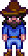

Old Mariner
| Old Mariner | |
 | |
| Information
| |
| Lives In | The Beach |
| Marriage | No |
| Loved Gifts | N/A |
The Old Mariner is a character that appears on the east side of the Beach. He sells the Mermaid's Pendant, a marriage token. Three conditions must be met for him to appear:
- Access to the beach's tide pools must be unlocked by repairing the bridge for 300 wood or purchasing the second community upgrade.
- The weather must be rainy.
- The beach must be entered between 6am – 7pm.
- Note: The Old Mariner will not appear in winter unless a Rain Totem is used. Even if a Rain Totem is used, he will not appear during the Night Market (Winter 15-17).
If the player has a relationship with a marriage candidate of 10 hearts and a bouquet has been given, the player may purchase the pendant for  5,000g. After using the pendant he will say, "Glad the Amulet worked out for ye, lad/miss."
5,000g. After using the pendant he will say, "Glad the Amulet worked out for ye, lad/miss."
If a player is not eligible for marriage, he will say "I've got this old amulet to sell... but somethin' tells me yer not ready for it, lad/miss."
If the player talks to the Old Mariner while having 10 hearts with an NPC but hasn't upgraded the farmhouse he will say "I can see that sparkle in yer eye, lad/miss. Ye must be head over heels in love. But I'm afraid a bigger house is essential for a happy marriage."
After purchasing the pendant, if the player has not given it to a marriage candidate, the Old Mariner will say "Don't be shy, now. Show that amulet to the one you intend to marry."
Gallery

Trivia
- The lost book Marriage Guide for Farmers describes the Old Mariner as a ghost.
- The Old Mariner will say "Glad the Amulet worked out for ye, lad/miss" after using the Void Ghost Pendant, even though this item is not the "Amulet" referred to in his dialogue.
| Villagers | |
|---|---|
| Bachelors | Alex • Elliott • Harvey • Sam • Sebastian • Shane |
| Bachelorettes | Abigail • Emily • Haley • Leah • Maru • Penny |
| Townspeople | Caroline • Clint • Demetrius • Evelyn • George • Gil • Gunther • Gus • Jas • Jodi • Kent • Lewis • Linus • Marlon • Marnie • Morris • Pam • Pierre • Robin • Vincent • Willy |
| Other | Birdie • Bouncer • Dwarf • Fizz • Governor • Grandpa • Henchman • Junimos • Krobus • Leo • Mr. Qi • Old Mariner • Professor Snail • Sandy • Wizard |